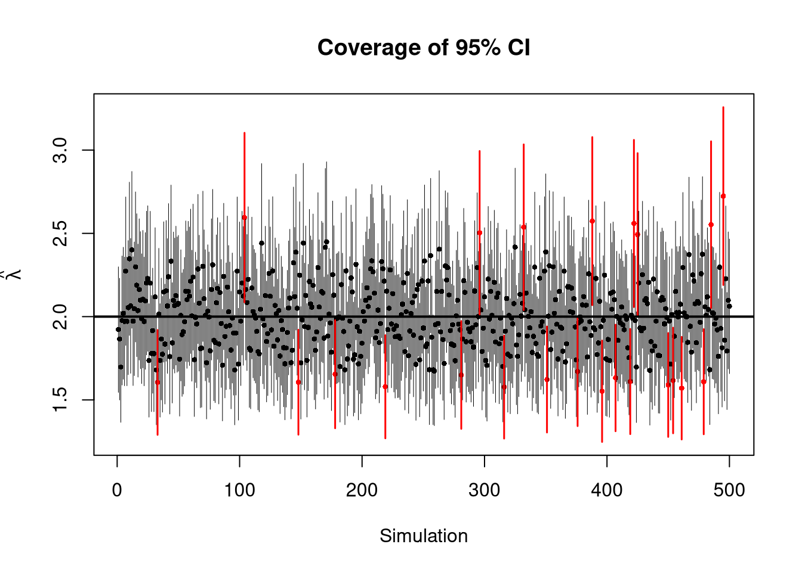

These are some notes taken while reading through Laub, Taimre, and Pollett (2021)
1 Point Process Background
1.1 Counting and Point Process Background
Some definitions that are used throughout
Definition 1 (Counting Process and History) A counting process is a stochastic process \((N(t): t \geq 0)\) taking values in \(\mathbb{N}_0\) that satisfy \(N(0) = 0\), is a.s. finite, and is a right continuous step function with increments of size \(+1\)
Further, denote by \((\mathcal{H}(u): u \geq 0)\) the history of the arrivals up to time \(u\). \(\mathcal{H}(u)\) is a filtration, that is, an increasing sequence of \(\sigma\)-algebras.
We can also consider the arrival times \(T = \{ T_1, T_2, \ldots \}\) at which the process \(N(t)\) jumps. The process defined as these arrival times is called a point process.
Definition 2 (Point Process) If a sequence of random variables \(\mathbf{T} = \{T_1, T_2, \ldots \}\), taking values in \([0, \infty)\), has \(\mathbb{P}(0 \leq T_1 \leq T_2 \leq \ldots) = 1\), and the number of points in a bounded region is a.s. finite, then \(\mathbf{T}\) is a (simple) point process.
These terms are often used interchangeably, although it should be clear from the context whether \(N(t)\) or \(\mathbf{T}\) is being discussed.
Definition 3 (Poisson Process) A counting process \((N(t): t \geq 0)\) is a homogeneous Poisson process with rate \(\lambda > 0\) if
For any interval \(I\), \(N(I) \sim \mathrm{Pois}(\lambda |I|)\)
For any \(n\) disjoint intervals \(I_1, I_2, \ldots, I_n\), the random variables \(N(I_1), N(I_2), \ldots, N(I_n)\) are independent.
From this definition we get \[
\mathbb{P}(N(t) = n) = \frac{(\lambda t)^n e^{-\lambda t}}{n!}, \quad
n=0,1,2,\ldots
\tag{1}\]
1.2 Conditional Intensity Functions
Given the history up until the last arrival \(u\), \(\mathcal{H}(u)\), define the conditional cumulative distribution (CDF) function of the next arrival time \(T_{k+1}\) as \[
F(t \mid \mathcal{H}(u)) = \int_u^t \mathbb{P}(T_{k+1} \in [s, s + \dd s]
\mid \mathcal{H}(u)) \, \dd s = \int_u^t f(s \mid \mathcal{H}(u)) \, \dd s
\]
The joint PDF for realisations \(\{ t_1, t_2, \ldots, t_k \}\) is then, by the chain rule for probabilities \[
f(t_1, t_2, \ldots, t_k) = \prod_{i=1}^k f(t_i \mid \mathcal{H}(t_{i-1}))
\tag{2}\]
It’s very common to suppress notation of conditioning upon \(\mathcal{H}(u)\) using a superscript asterisk notation, e.g. \(f^*(t) \coloneqq f(t \mid \mathcal{H}(u))\).
It is often more convenient to work with the conditional intensity function (also known as the hazard function in some fields) \(\lambda^*(t)\) defined as \[
\lambda^*(t) = \frac{f^*(t)}{1 - F^*(t)}
\tag{3}\]
However there is another representation for the conditional intensity as the expected rate of arrivals conditioned on \(\mathcal{H}(t)\):
Definition 4 (Conditional Intensity Function) Consider a counting process \(N\) with associated histories \(\mathcal{H}\). If a non-negative function \(\lambda^*(t)\) exists such that \[
\lambda^*(t) = \lim_{h \downarrow 0} \frac{\mathbb{E}[N(t + h) - N(t)
\mid \mathcal{H}(t)]}{h}
\] which only relies of information of \(N\) in the past (that is, \(\lambda^*(t)\) is \(\mathcal{H}(t)\)-measurable), then it is called the conditional intensity function of \(N\).
Lastly, we define the compensator, which is frequently used in parameter estimation and goodness of fit testing of point processes.
Definition 5 (Compensator) For a counting process \(N\) the non-decreasing function \[
\Lambda(t) = \int_0^t \lambda^*(s) \dd s
\] is called the compensator of the counting process.
2 Hawkes Process Background
The Hawkes process is a model for a ‘self-exciting’ counting process, where the history of past arrivals increases the chance of subsequent arrivals for a period of time.
The Hawkes process is defined by its conditional intensity function, originally given in Hawkes (1971) as
Definition 6 (Hawkes Process) A Hawkes process is a counting process \((N(t): t \geq 0)\) whose conditional intensity function for \(t \ge 0\) is \[
\lambda^{*}_{t} = \lambda + \sum_{t_i<t} \mu (t - t_i)
\tag{4}\] where \(\lambda > 0\) is the background arrival rate, \(\mu : (0,\infty) \rightarrow [0,\infty)\) is the excitation function (or kernel), and \(t_i\) are all the arrival times in the history of the process \(\mathcal{H}(u)\).
The most common choice of \(\mu\) is the exponentially decaying kernel \[
\mu(t) = \alpha e^{-\beta t} , \quad \alpha,\beta > 0
\]
An alternative way to represent a Hawkes process is through a branching process known as an immigrant-birth process (Hawkes and Oakes (1974)). In this view, the immigration process is a homogeneous Poisson process with rate \(\lambda\), and the arrival of an individual from the immigrant process at time \(s\) initiates a non-homogeneous Poisson process of births with intensity \(\mu(t - s)\) for \(t > s\), which subsequently may result in further descendants. Each arrival generates a Poisson-distributed number of first-generation offspring with mean \(\eta\), where \(\eta\) is known as the branching ratio and is given by
\[
\eta = \int_0^{\infty}\mu(t)dt
\tag{5}\]
For the process to be stationary with finite mean, the condition \(\eta < 1\) is necessary and sufficient.
3 Maximum Likelihood Estimation
Below is an example of estimating a parameter from \(\mathrm{Exp(\lambda)}\) data using Maximum Likelihood Estimation (MLE). For this problem \[
\begin{align}
L(\lambda \mid \mathbf{t}) &= \prod_{i=1}^n \lambda e^{-\lambda t_i} \\
l(\lambda \mid \mathbf{t}) &= n \log \lambda - \lambda \sum_{i=1}^n t_i
\end{align}
\]
Code
# generate Exp(λ) variables, with each column a new realisationgenerate_exp_matrix <-function(n_obs, n_trials, lambda_true, seed =NULL) {# set seed if givenif (!is.null(seed)) {set.seed(seed)}# simulate matrix of exponential samples t_mat <-matrix(rexp(n_obs*n_trials, rate = lambda_true),nrow = n_obs,ncol = n_trials )return(t_mat)}# log-likelihood of Exp(λ) dataexp_loglik <-function(lambda, t) { n <-length(t) n*log(lambda) - lambda*sum(t)}# since optim minimises by defaultexp_negloglik <-function(lambda, t) {-exp_loglik(lambda, t)}# take t matrix and create a dataframe of mle parameter estimates and std errorsmle_results <-function(t_mat) { n <-ncol(t_mat)# to store results results <-data.frame(trial =1:n, sample_size =rep(nrow(t_mat), n),mean =rep(NA, n),se =rep(NA, n),lower =rep(NA, n),upper =rep(NA, n) )# mle fit for each trialfor (i in1:n) { fit <-optim(par =1,fn = exp_negloglik,t = t_mat[, i],method ="L-BFGS-B",lower =1e-8,hessian =TRUE ) results[i, "mean"] <- fit$par results[i, "se"] <-sqrt(1/ fit$hessian) } results$lower <- results$mean -1.96*results$se results$upper <- results$mean +1.96*results$sereturn(results)}lambda_true <-2t_mat <-generate_exp_matrix(n_obs =100, n_trials =500, lambda_true = lambda_true, seed =5)results <-mle_results(t_mat)
Parameter
MC Trials
Sample Size
Mean
Bias
SD
RMSE
95% Coverage
MC Error
λ
500
100
2.0012
0.0012
0.1985
0.1983
0.954
0.0089

Theorem 1 (Point Process Likelihood) Let \(N\) be a simple point process with conditional intensity \(\lambda^*(t)\) and compensator \(\Lambda(t)\). If we observe all the arrival times over the time period \([0, T ]\), denoted \(\{t_1, \ldots, t_{N(T)} \}\), then the likelihood function \(L\) for \(N\) is \[
L = \left[ \prod_{i=1}^{N(T)} \lambda^*(t_i) \right] e^{-\Lambda(T)}
\tag{6}\] and the log-likelihood function is \[
l = \sum_{i=1}^{N(T)} \log(\lambda^*(t_i)) - \Lambda(t)
\tag{7}\]
3.1 Hawkes Process MLE
To get the form of the Hawkes likelihood, first note that the integral in \(\Lambda(T)\) over \([0, T]\) can be broken down into \[
[0, t_1] \cup (t_1,t_2] \cup \ldots \cup (t_{N(T) - 1}, t_{N(T)}] \cup (t_{N(T)}, T]
\] and therefore \[
\Lambda(T) = \int_0^{t_i} \lambda^*(s) \dd s + \sum_{i=1}^{N(T)-1} \int_{t_i}^{t_i + 1} \lambda^*(s) \dd s + \int_{t_{N(T)}}^{T} \lambda^*(s) \dd s
\]
Substituting the Hawkes conditional intensity in Equation 4, and using \(M(t) \coloneqq \int_0^t \mu(s) \dd s\), the integral term can be written as \[
\begin{align}
\int_{t_i}^{t_{i+1}} \lambda^*(s) \dd s &= \int_{t_i}^{t_{i+1}}
\left[ \lambda + \sum_{t_j < s} \mu(s - t_j) \right] \dd s
\\
&= \lambda (t_{i+1} - t_i) + \sum_{j=1}^i \int_{t_i}^{t_{i+1}} \mu(s - t_j)
\dd s
\\
&= \lambda (t_{i+1} - t_i) + \sum_{j=1}^i \left[ M(t_{i+1} - t_j) -
M(t_i - t_j) \right]
\end{align}
\] This summation holds for \(i=1,\ldots,N(T)-1\), for \(i=0\) where the summation term disappears due to no events in the history, and for \(i = N(T)\) if we abuse notation a little and say \(T=t_{N(t)+1}\). Therefore we can write
Thee log-likelihood (Equation 7), combined with the this form of the Hawkes compensator \(\Lambda(T)\) and the Hawkes conditional intensity (Equation 4) gives us
\[
l = \sum_{i=1}^{N(T)} \log \left[ \lambda + \sum_{j=1}^{i-1} \mu(t_i - t_j)
\right] - \lambda T - \sum_{i=1}^{N(T)} M(T - t_i)
\] The double sum will mean that for a numeric optimisation routine, we will have to evaluate a \(\mathcal{O}([N(T)]^2)\) function for each optimisation step which will scale poorly.
3.1.1 Example Implementation
References
Hawkes, Alan G. 1971. “Spectra of Some Self-Exciting and Mutually Exciting Point Processes.”Biometrika 58 (1): 83–90.
Hawkes, Alan G., and David Oakes. 1974. “A Cluster Process Representation of a Self-Exciting Process.”Journal of Applied Probability 11 (3): 493–503.